Speaks LocalSend
Implements LocalSend protocol v2.2, so it discovers and exchanges files with the official clients — including LocalSend on Android and Linux.
Files and clipboard across your devices, never across the internet
Send photos, videos, whole folders and your clipboard between iPhone, Mac and Windows on the same Wi‑Fi. No account, no cloud, no size limits — the data goes straight from one device to the other.
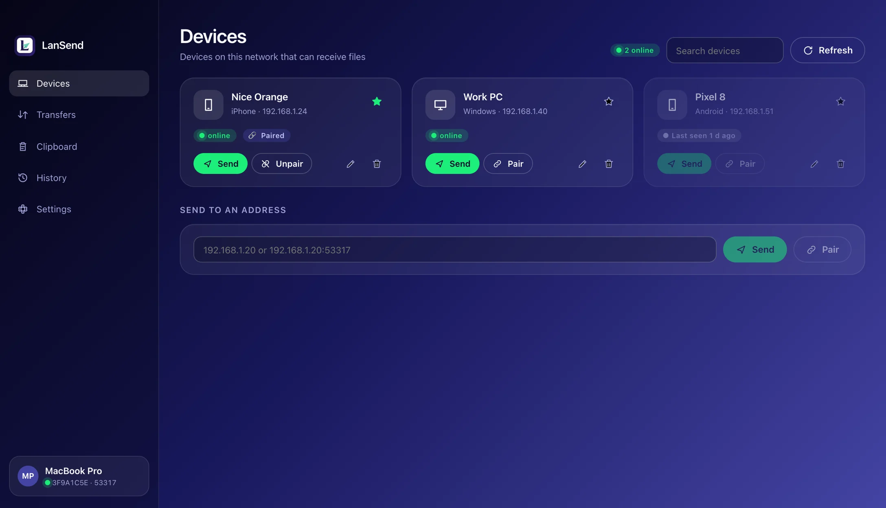
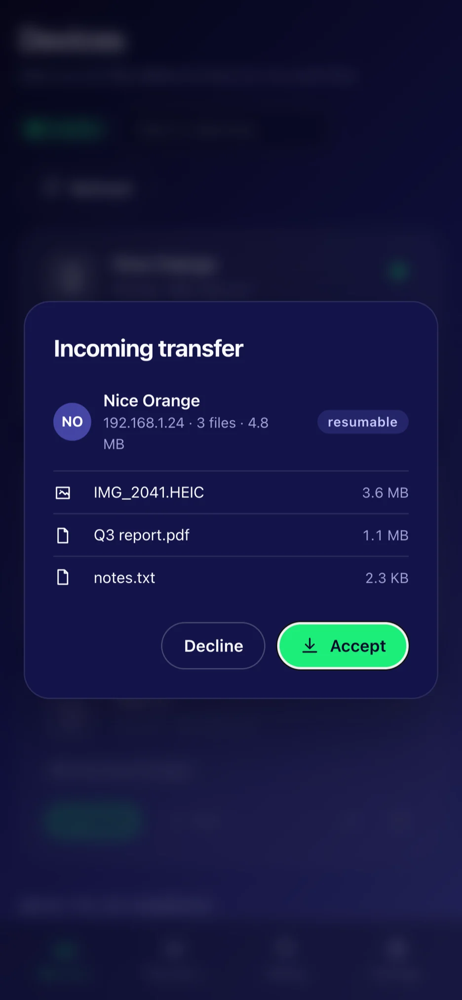
One network, one tap, and it is on the other device.
Implements LocalSend protocol v2.2, so it discovers and exchanges files with the official clients — including LocalSend on Android and Linux.
Devices talk directly to each other. No server, no account, no telemetry, no size limit. It works on a network with no internet at all.
macOS, Windows and iOS share the same interface: a sidebar on the desktop, a tab bar on the phone.
Mutual TLS with fingerprint checks, an optional PIN before anyone can send to you, and a SHA‑256 check on every file received.
Once two computers are paired, text, images and file lists follow you between them (macOS and Windows).
A dropped Wi‑Fi, a sleeping laptop or a cancelled transfer picks up where it left off instead of starting over.
Send a whole directory with its structure intact; the receiving side can file everything by device, date or type.
Types are detected from content. History shows real thumbnails (HEIC / AVIF through the system decoders) and music shows title and duration.
Everything you sent and received, ready to re-send, remove or clear.
lan-send covers discovery, transfers, pairing, clipboard and history on macOS, Windows and Linux.
English, 简体中文, 繁體中文, 日本語, 한국어, Deutsch, Français, Español — following the system theme or your choice.
Streamed end to end, so a 50 GB file costs no more memory than a small one. File names are sanitised and nothing is written outside your receive folder.
Taken from the app itself, not retouched.
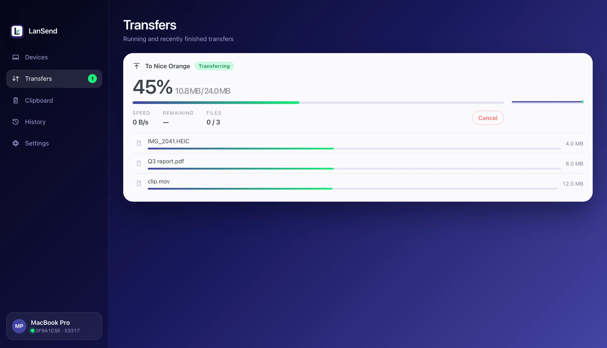
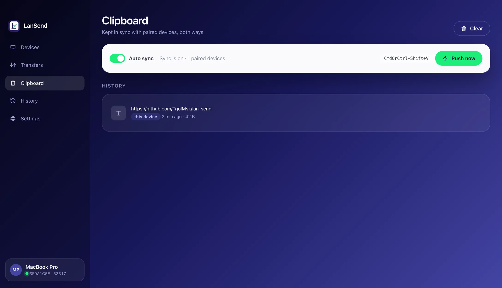
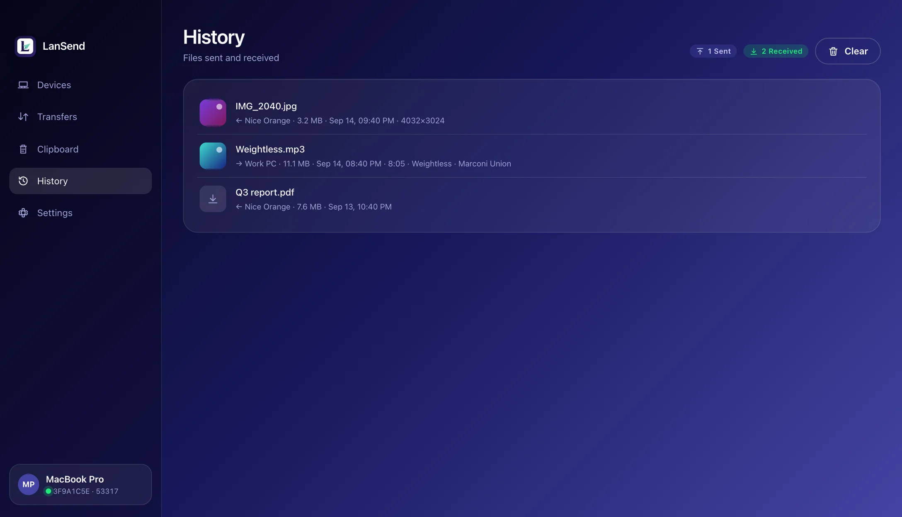
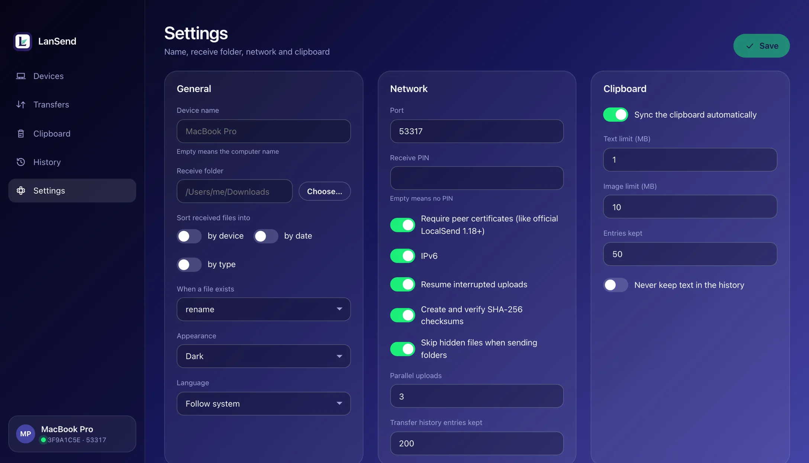
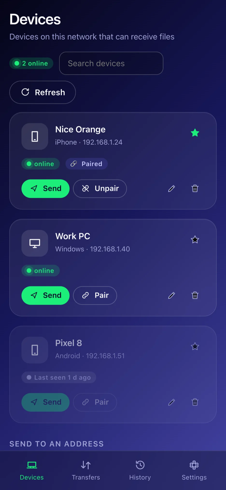
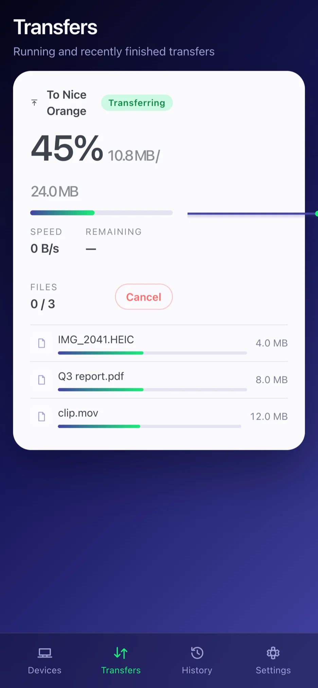
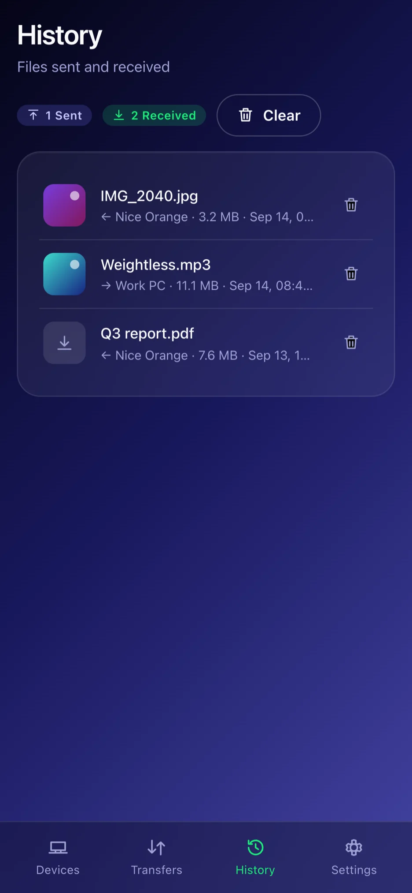
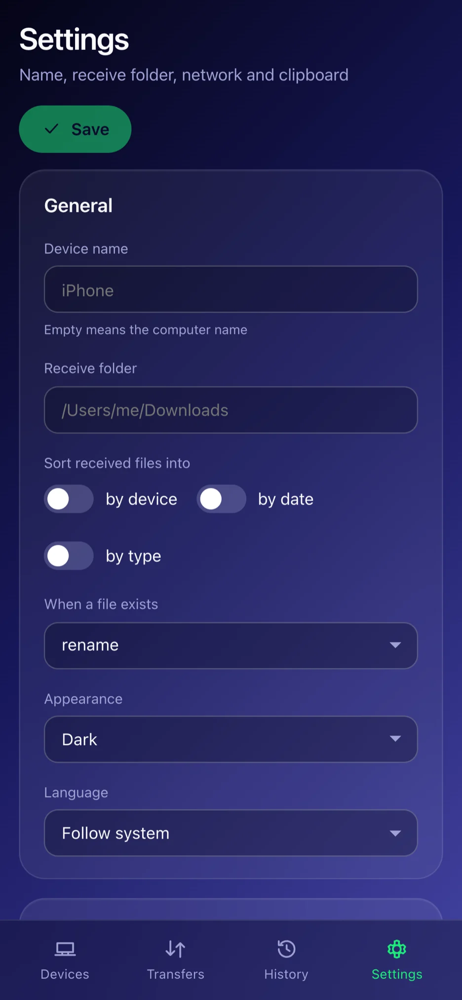
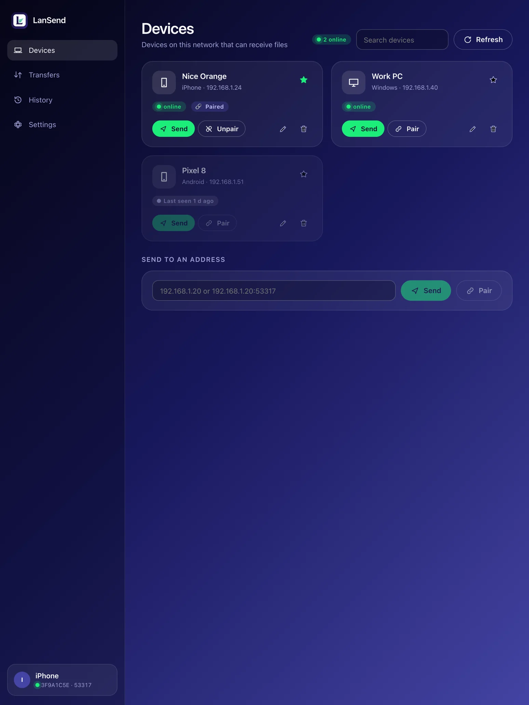
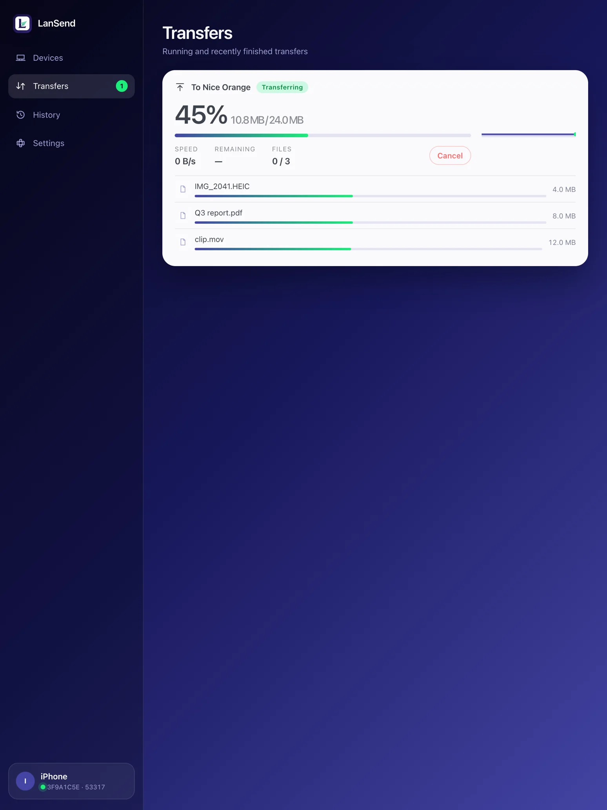
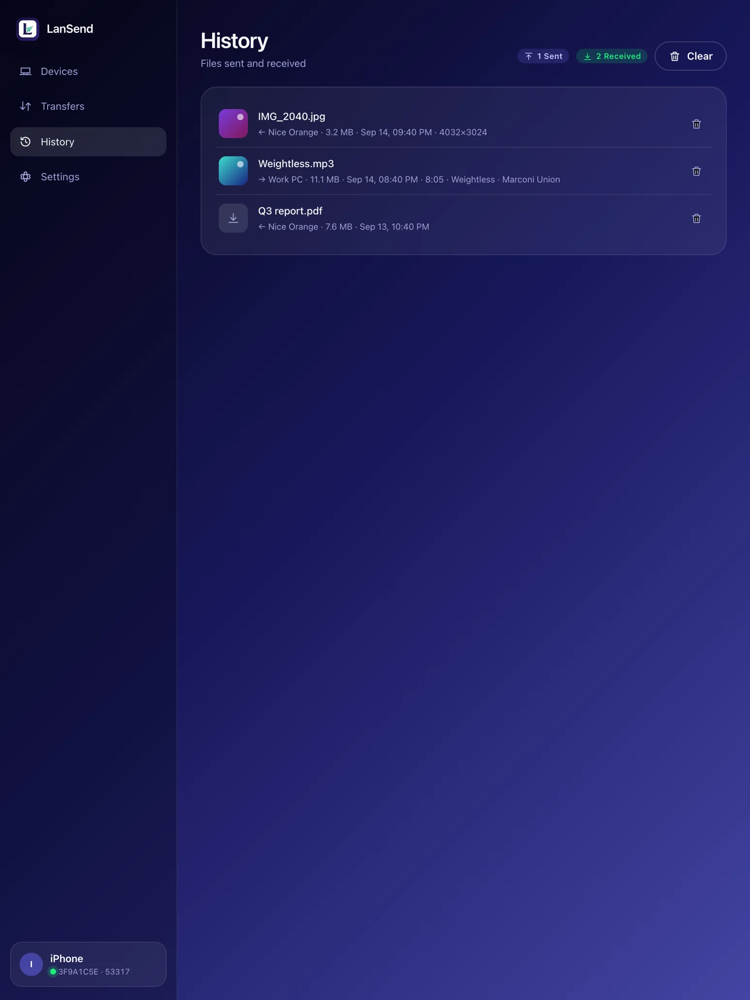
The same protocol as the official LocalSend: UDP multicast discovery, then a direct HTTPS transfer.
Each device announces its alias and fingerprint over UDP multicast and shows up within a few hundred milliseconds. Where a corporate or public Wi‑Fi blocks multicast, typing the other device’s IP still works.
The receiving side sees the file list before anything is written and can accept only part of it. You can require a PIN, or a one-time pairing where both ends confirm the same six-digit code.
The two devices open a mutually authenticated TLS connection, stream the files into the folder you chose, and verify every one with SHA‑256. An interrupted transfer resumes later.
The protocol details are in the LocalSend interface checklist and protocol extensions: resume, pairing and clipboard sync are private extensions that official clients simply ignore.
Free and open source. Every installer is built, signed and notarised by GitHub Actions.
Universal binary for Apple Silicon and Intel. Requires macOS 12 or newer.
Requires Windows 10 or newer (WebView2 ships with the system; the installer offers it if missing).
The iPhone and iPad app is on the App Store — free, no in-app purchases, no ads.
App StoreRequires iOS 15 or newer, on iPhone and iPad. Allow the Local Network permission on first launch or no devices will show up.
The same Rust core without a window — for scripts and servers. Linux is command line only.
Same core, same config as the app: same discovery, same encryption, same history.
Full usage in lan-send --help and the repository README.
Yes. LanSend implements the same LocalSend protocol v2.2, so both sides discover each other and transfer in either direction — including LocalSend on Android and Linux. Resume, pairing and clipboard sync are private extensions; official clients ignore those fields and transfer normally.
Neither. Files go straight from one device to the other with no relay in between. There is no sign-up, no sign-in, no telemetry, no ads and no in-app purchases.
Check that both devices are on the same Wi‑Fi with LanSend or LocalSend open, and that iOS was granted the Local Network permission. Some corporate and public networks block multicast between clients; in that case use “Send by address” on the Devices page and type the other device’s IP.
To the Downloads folder on macOS and Windows by default, configurable in Settings, optionally sorted into folders by device, date or type. On iOS they are in the Files app under “On My iPhone › LanSend”.
No. iOS does not let an app read the clipboard in the background, and a half-working version would be worse than none, so clipboard sync is macOS and Windows only.
MIT. The core library, the desktop and iOS app and the command line tool are all on GitHub; issues and pull requests are welcome.